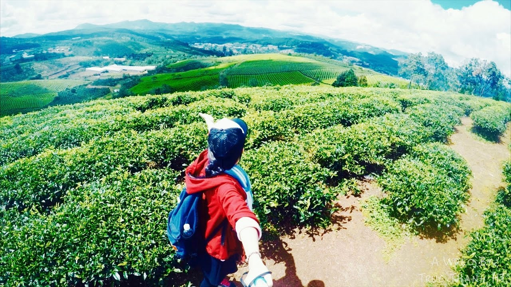

Đồi chè Cầu Đất

Đà Lạt thu bé lại chỉ trong 1 tầm mắt
Đến đồi chè vào sáng sớm, bạn sẽ được tận hưởng cảm giác đứng bồng bềnh trong mây, ngắm nhìn những lá chè xanh mơn mởn còn đọng sương sớm.
Là địa điểm du lịch miễn phí nên Cầu Đất Farm không chỉ là địa điểm check- in sống ảo tuyệt vời cho các bạn trẻ mà còn được các cặp đôi chọn mặt gửi vàng thực hiện những bộ ảnh cưới tại đây.
Đồi chè đẹp nhất vào những tháng cuối năm, khi Đà Lạt bước vào thời tiết se lạnh mùa đông, nhiều mây và sương mù.
Bạn nên đến vào sáng sớm hoặc chiều muộn để chiêm ngưỡng hết vẻ đẹp của Cầu Đất Farm.
Bạn nên đến vào sáng sớm hoặc chiều muộn để chiêm ngưỡng hết vẻ đẹp của Cầu Đất Farm
Chỉ dẫn: từ trung tâm thành phố đến đồi chè khoảng 25 km, bạn sẽ mất tầm 30 – 45 phút di chuyển bằng xe máy. Tại đây không có trông giữ xe nên bạn cần khóa xe cẩn thận.